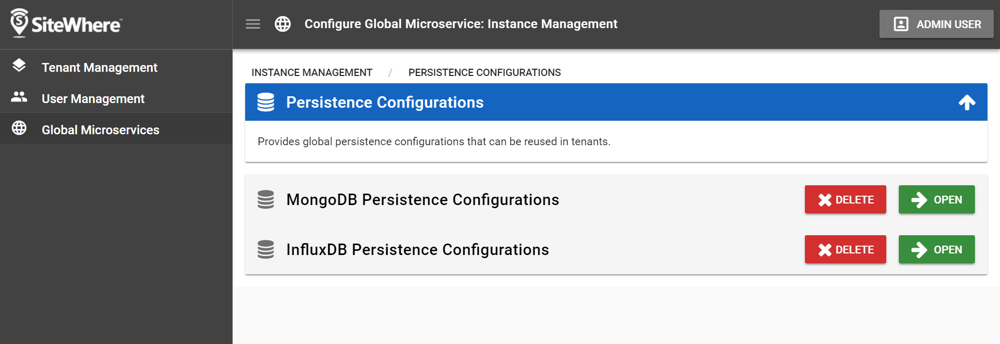
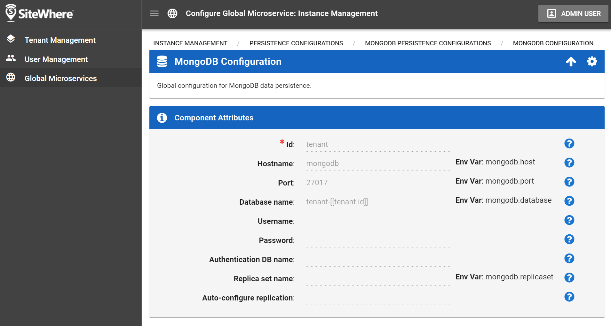
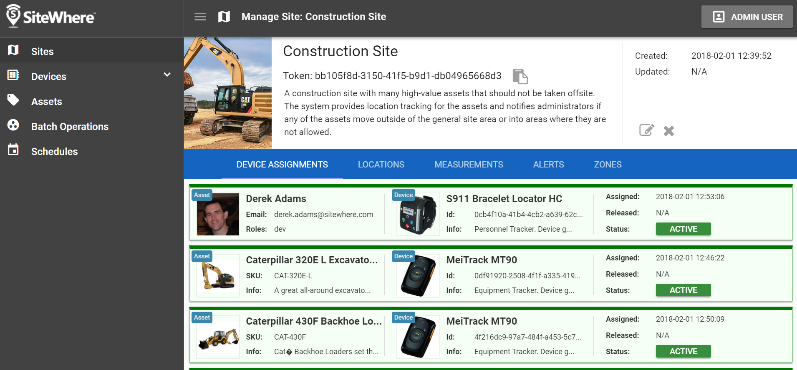
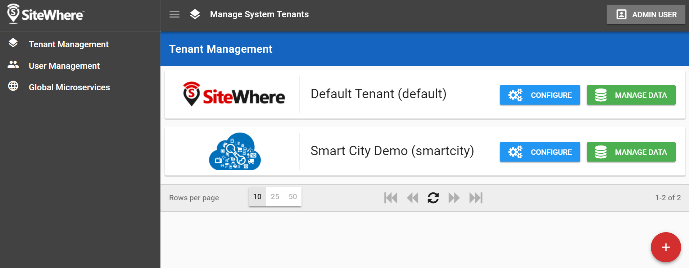
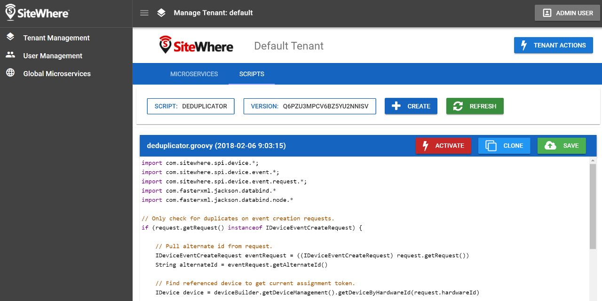

New Platform 2.0 Features¶
Beyond the core architectural changes, the SiteWhere 2.0 platform introduces a number of new features intended to make it easier to use while improving security and streamlining the system management workflow.
Centralized Configuration Management¶
In SiteWhere 1.x, most of the configuration was done at the tenant level with no concept of system-wide settings. With the introduction of the concept of a SiteWhere instance in 2.x, many settings can now be configured at a global level and referenced by tenants, allowing for centralized management.
Persistence Configurations¶
Configuration settings for data persistence are now available at the instance level, allowing database details to be specified globally and reused in tenants. The tenants can reference the configurations by id and are automatically updated if changes are made globally. There is still the option of configuring database settings locally for tenants if global configuration is not needed. The microservices architecture also allows persistence settings to be controlled at a finer level (e.g. different databases for tenant device management and asset management) if desired.
Variable Replacement in Datastore Configuration¶
When configuring database connectivity settings such as hostname and database name, SiteWhere now allows for the use of variable substitution in names, allowing for per-tenant settings that are derived from a global expression. For instance, this supports the existing approach of using a database per tenant when configuring MongoDB, but also supports other approaches such as having a separate MongoDB instance for each tenant by using variable substitution in the hostname.
The user interface also now directly supports the mapping of system environment variables to override configuration settings. Using this approach, the microservice can be configured externally (in the Docker compose file) to pass variables to configure SiteWhere components.
InfluxDB Improvements¶
The 1.x implementation of InfluxDB for event management did not fully support multitenancy. In the 2.0 platform, InfluxDB may be configured globally using variable substitution so that each tenant has its own InfluxDB database. The updates also include an upgrade to the latest version of the InfluxDB Java client to support that latest bug fixes and performance improvements.
Improved Administrative User Interface¶
SiteWhere 2.0 features a new administrative user interface based on Vue along with Vuetify for a look that is more consistent with Google Material Design guidelines. The interface is built in a component-oriented fashion for a more efficient development workflow. The longer-term plan is to release reusable component libraries so that SiteWhere UI/API components can easily be used in other Vue projects.
Tenant Management Workflow Improvements¶
A common complaint with the 1.x user interface was the non-intuitive workflow for managing tenants. SiteWhere 2.0 moves tenant management and other aspects of global configuration to the landing page after login. Tenants may be easily added and configured without the need to log out of the application as before. The new approach also fixes issues with being unable to reconfigure tenants that failed to start.
Improved Scripting Support¶
Many aspects of the SiteWhere platform rely on pluggable scripts to allow for customized processing behaviors. In SiteWhere 1.x, scripts were stored on the filesystem and were not managed as first class entities. SiteWhere 2.0 provides much more comprehensive support for scripting and adds many new script management features. A library of customized scripts can be quickly developed directly from within the SiteWhere administrative application and shared across the entire distributed system without any manual intervention.
Script Storage and Metadata¶
In SiteWhere 2.0, scripts are stored in the central ZooKeeper tree, which allows for a publish/subscribe strategy where nodes can listen for script updates they are interested in. In addition to the script content, a metadata structure has been added so that other aspects such as a human-readable name, description, script language, and other attributes may be captured. New APIs have been added, allowing scripts to be managed remotely without the need for direct interactions with ZooKeeper.
Script Versioning¶
In addition to the core metadata for a script, SiteWhere 2.0 now tracks versioning for scripts as updates are made over time. New versions can be added via the APIs, then activated so that they are broadcast to interested parties. The new versioning mechanism allows scripts to be rolled back to previous versions if an update causes errors.
Scripting User Interface¶
The admistrative user interface now fully supports script management. Both metadata and content for new scripts can be added via the user interface, which supports syntax highlighting and many other features via the CodeMirror editor. New versions may be added and activated via the user interface.
Security Improvements¶
System security is always a high priority for SiteWhere and the 2.0 release contains a number of updates that bolster the existing infrastructure.
JSON Web Token¶
The SiteWhere REST APIs have moved from HTTP basic authentication to using JWT to provide identity information. A separate REST API is now available that allows an application/user to obtain a time-limited token based on their system credentials. All REST calls must now contain the JWT to provide authentication information. The JWT is passed between microservices so that all nested calls may be authenticated as well. As such, any direct access via gRPC channels must also provide a valid JWT.
Updated Security Headers¶
SiteWhere 1.x required a tenant authentication token to be passed in the headers for REST calls. Since this was used to determine the tenant id requested from the caller, there was the potential for problems if tokens were the same for multiple tenants. SiteWhere 2.0 requires two headers to be passed: one for the tenant id and a second for the authentication token. Changing the authentication token on a regular basis may be used as a strategy for preventing unauthorized devices from registering with the system.
Data Model¶
A number of changes will be made to the core data model to accomodate new functionality. Some of them will involve renaming existing entites. For instance, device specifications will be renamed to device types to better reflect their role in the system. Other areas of the model will be expanding. For instance the existing asset model will be expanded to differentiate between assets and asset types since the existing model is ambiguous. A new entity for asset hierarchy will also be added so that assets can be grouped hierarchically.
New Id Management Structure¶
A common complaint with the SiteWhere 1.x data model was that the unique ids for objects (e.g. hardware id for a device) could not be changed after initial creation. In 2.0, all core objects now have a UUID in addition to user-facing ids so that user-facing identifiers may be changed without violating data integrity. With the update, device hardware ids, assignment tokens, etc may be updated without breaking referential integrity.